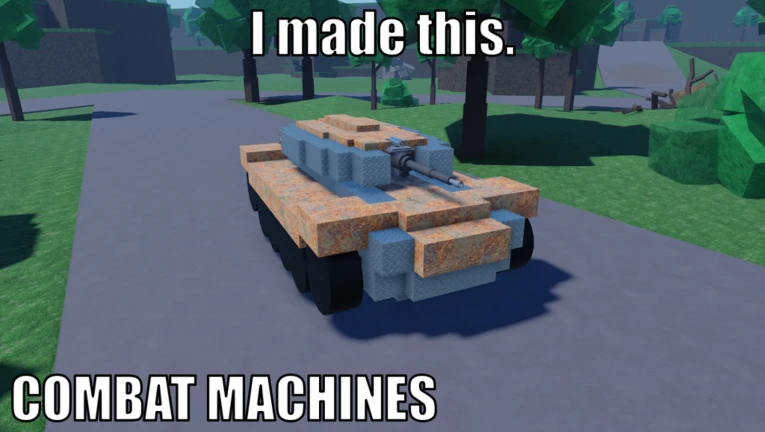

Welcome to COMBAT MACHINES Wiki
Build for durability, fight for the flag, and bank your gears before someone tears your machine apart.

Play the Game
Combat Machines is a building game where you design and fight with your own custom vehicles. You use a variety of parts—like thrusters, armor, and weapons—to create anything from tanks to flying drones. The game uses real physics, so how you build actually matters. If your machine is too top-heavy, it will flip; if your armor is too thin, a single shot can tear off a wheel or a wing. You’ll need to experiment with different parts and layouts to find the best balance of speed and strength for the battlefield.